Candidate List 20260515 Previous Day Next Day Section 1: New Sources (age<1d) Cosmological Afterglow
Section 2: Old (1-5d) sources observed last night placeholder
Section 1: New Afterglow/FBOT Cands Last Night (1)
1. ZTF26aawtwql (FBOT?) [Back to Top] [Share] [Trigger Swift] [Fritz ] [Lasair ]RA, Dec: 228.87648, -14.50352 15h15m30.35s, -14d-30m-12.68sGalactic (l, b): 347.4001, 35.64233 WARNING: 3.46 deg from ecliptic plane ext(g-r) = 0.141LegacySurvey: 1 sources in 3 arcsec Closest: d = 0.13 arcsec, 239.4 deg (east of north) photoz=0.09 (68% bounds 0.05, 0.21), type=REX peak abs mag = -19.13 (68% bounds -17.83, -21.14)
Section 2: Older Sources Observed Last Night (31)
0. ZTF26aaveyho (Afterglow?) [Back to Top] [Share] [Trigger Swift] [Fritz ] [Lasair ]RA, Dec: 233.98178, 8.73671 15h35m55.63s, 8d44m12.14sGalactic (l, b): 15.48241, 47.04732 ext(g-r) = 0.044peak abs mag = -17.22
1. ZTF26aavgmiw (Afterglow?) [Back to Top] [Share] [Trigger Swift] [Fritz ] [Lasair ]RA, Dec: 201.76085, 60.31026 13h27m2.60s, 60d18m36.92sGalactic (l, b): 114.99936, 56.26625 ext(g-r) = 0.019peak abs mag = -18.48 Consistent with synchrotron, g-r>0!
2. ZTF26aavgnym (Afterglow?FBOT?) [Back to Top] [Share] [Trigger Swift] [Fritz ] [Lasair ]RA, Dec: 191.74013, 44.40317 12h46m57.63s, 44d24m11.41sGalactic (l, b): 125.62221, 72.70169 ext(g-r) = 0.024peak abs mag = -19.95 Consistent with synchrotron, g-r>0!
3. ZTF26aavlgre (FBOT?) [Back to Top] [Share] [Trigger Swift] [Fritz ] [Lasair ]RA, Dec: 253.93275, 30.49786 16h55m43.86s, 30d29m52.31sGalactic (l, b): 52.06492, 37.03738 ext(g-r) = 0.036peak abs mag = -20.11 LegacySurvey: 1 sources in 3 arcsec Closest: d = 0.44 arcsec, 192.4 deg (east of north) photoz=0.1 (68% bounds 0.08, 0.13), type=SER peak abs mag = -19.56 (68% bounds -19.08, -20.03)
4. ZTF26aavqbzd (FBOT?) [Back to Top] [Share] [Trigger Swift] [Fritz ] [Lasair ]RA, Dec: 206.76805, -1.72251 13h47m4.33s, -1d-43m-21.03sGalactic (l, b): 330.04933, 58.18963 ext(g-r) = 0.044peak abs mag = -21.08 LegacySurvey: 1 sources in 3 arcsec Closest: d = 0.40 arcsec, 292.0 deg (east of north) photoz=0.14 (68% bounds 0.12, 0.19), type=SER peak abs mag = -20.22 (68% bounds -19.74, -20.92) Consistent with synchrotron, g-r>0!
5. ZTF26aavqdbg (Afterglow?) [Back to Top] [Share] [Trigger Swift] [Fritz ] [Lasair ]RA, Dec: 203.39262, -20.63455 13h33m34.23s, -20d-38m-4.38sGalactic (l, b): 316.0661, 41.1602 ext(g-r) = 0.087 Consistent with synchrotron, g-r>0!
6. ZTF26aavrsod (Afterglow?) [Back to Top] [Share] [Trigger Swift] [Fritz ] [Lasair ]RA, Dec: 242.92378, -24.06626 16h11m41.71s, -24d-3m-58.53sGalactic (l, b): 350.94051, 19.61509 WARNING: -2.91 deg from ecliptic plane ext(g-r) = 0.27
7. ZTF26aavrvex (Afterglow?FBOT?) [Back to Top] [Share] [Trigger Swift] [Fritz ] [Lasair ]RA, Dec: 230.06446, 1.52622 15h20m15.47s, 1d31m34.40sGalactic (l, b): 3.62156, 46.11633 ext(g-r) = 0.054peak abs mag = -19.81 LegacySurvey: 1 sources in 3 arcsec Closest: d = 0.42 arcsec, 235.3 deg (east of north) photoz=0.1 (68% bounds 0.1, 0.11), type=SER peak abs mag = -18.94 (68% bounds -18.77, -19.13)
8. ZTF26aavvgkz (Afterglow?FBOT?) [Back to Top] [Share] [Trigger Swift] [Fritz ] [Lasair ]RA, Dec: 327.10161, 22.40358 21h48m24.39s, 22d24m12.90sGalactic (l, b): 76.64963, -23.59583 ext(g-r) = 0.103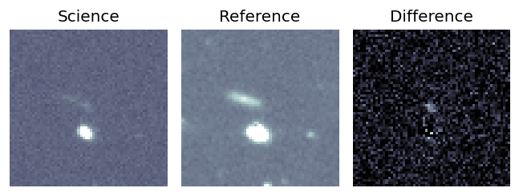
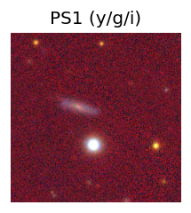
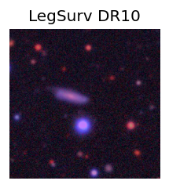
peak abs mag = -18.80 LegacySurvey: 1 sources in 3 arcsec Closest: d = 1.75 arcsec, 16.7 deg (east of north) photoz=0.14 (68% bounds 0.04, 0.21), type=EXP peak abs mag = -19.83 (68% bounds -16.84, -20.83) 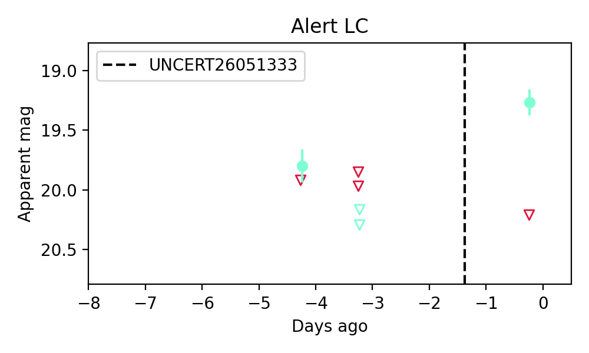
9. ZTF26aawampy (Afterglow?) [Back to Top] [Share] [Trigger Swift] [Fritz ] [Lasair ]RA, Dec: 231.03995, 8.68082 15h24m9.59s, 8d40m50.94sGalactic (l, b): 13.13131, 49.49931 ext(g-r) = 0.036peak abs mag = -17.81 LegacySurvey: 1 sources in 3 arcsec Closest: d = 1.85 arcsec, 248.7 deg (east of north) photoz=0.04 (68% bounds 0.03, 0.05), type=SER peak abs mag = -17.67 (68% bounds -17.01, -18.06) Consistent with synchrotron, g-r>0!
10. ZTF26aawbvor (Afterglow?) [Back to Top] [Share] [Trigger Swift] [Fritz ] [Lasair ]RA, Dec: 268.14683, 12.23804 17h52m35.24s, 12d14m16.96sGalactic (l, b): 37.49743, 18.51492 ext(g-r) = 0.142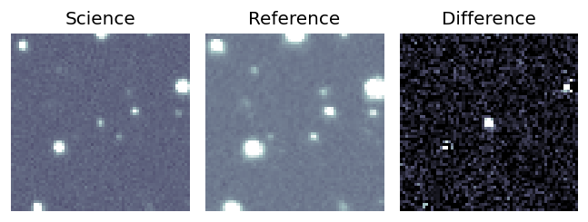
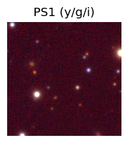
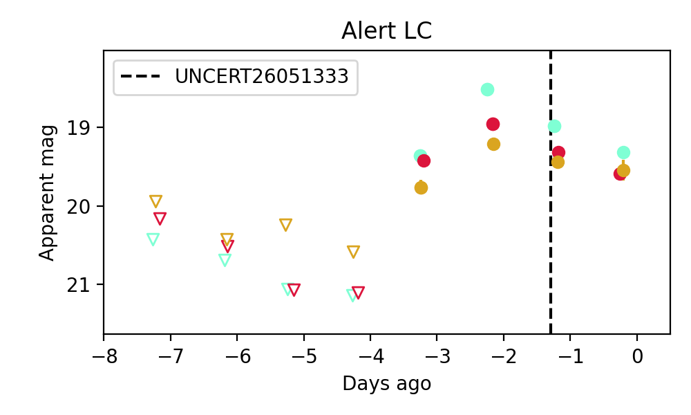
Consistent with synchrotron, g-r>0!
11. ZTF26aawcshf (Afterglow?) [Back to Top] [Share] [Trigger Swift] [Fritz ] [Lasair ]RA, Dec: 251.13188, -27.25509 16h44m31.65s, -27d-15m-18.33sGalactic (l, b): 353.54756, 11.96106 WARNING: -4.91 deg from ecliptic plane ext(g-r) = 0.351
12. ZTF26aawfdna (Afterglow?) [Back to Top] [Share] [Trigger Swift] [Fritz ] [Lasair ]RA, Dec: 212.31908, 76.64907 14h 9m16.58s, 76d38m56.65sGalactic (l, b): 117.20196, 39.60061 ext(g-r) = 0.037 Consistent with synchrotron, g-r>0!
13. ZTF26aawgeif (Afterglow?) [Back to Top] [Share] [Trigger Swift] [Fritz ] [Lasair ]RA, Dec: 259.87719, -13.77216 17h19m30.52s, -13d-46m-19.76sGalactic (l, b): 9.64784, 13.23528 ext(g-r) = 0.498 Consistent with synchrotron, g-r>0!
14. ZTF26aawggyc (Afterglow?) [Back to Top] [Share] [Trigger Swift] [Fritz ] [Lasair ]RA, Dec: 277.26945, 2.97515 18h29m4.67s, 2d58m30.54sGalactic (l, b): 33.03774, 6.32935 ext(g-r) = 0.684
15. ZTF26aawilct (Afterglow?FBOT?) [Back to Top] [Share] [Trigger Swift] [Fritz ] [Lasair ]RA, Dec: 212.36841, 14.40156 14h 9m28.42s, 14d24m5.63sGalactic (l, b): 1.85511, 67.81097 ext(g-r) = 0.021LegacySurvey: 1 sources in 3 arcsec Closest: d = 1.55 arcsec, 355.1 deg (east of north) photoz=0.46 (68% bounds 0.37, 0.64), type=REX peak abs mag = -22.71 (68% bounds -22.19, -23.57) Consistent with synchrotron, g-r>0!
16. ZTF26aawjxnp (Afterglow?) [Back to Top] [Share] [Trigger Swift] [Fritz ] [Lasair ]RA, Dec: 240.40969, 55.92022 16h 1m38.33s, 55d55m12.78sGalactic (l, b): 86.72035, 45.58325 ext(g-r) = 0.011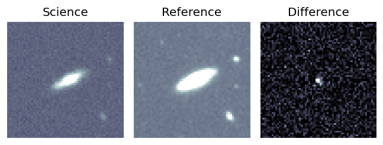
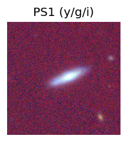
peak abs mag = -16.17 peak abs mag = -15.72 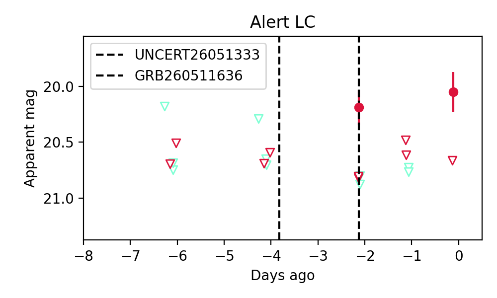
17. ZTF26aawlagq (Afterglow?) [Back to Top] [Share] [Trigger Swift] [Fritz ] [Lasair ]RA, Dec: 287.93065, -1.47922 19h11m43.36s, -1d-28m-45.21sGalactic (l, b): 33.9283, -5.1874 ext(g-r) = 0.57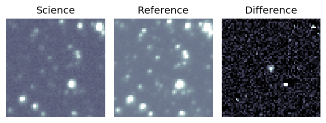
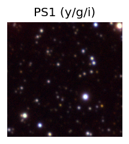
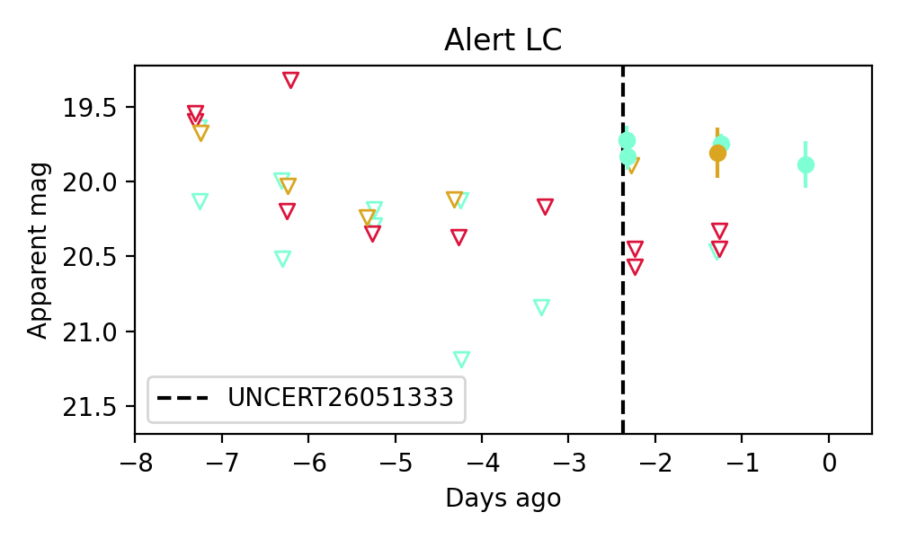
18. ZTF26aawlqmn (Afterglow?) [Back to Top] [Share] [Trigger Swift] [Fritz ] [Lasair ]RA, Dec: 247.09216, 32.85117 16h28m22.12s, 32d51m4.22sGalactic (l, b): 53.72839, 43.18512 ext(g-r) = 0.023peak abs mag = -15.68 Consistent with synchrotron, g-r>0!
19. ZTF26aawmopv (FBOT?) [Back to Top] [Share] [Trigger Swift] [Fritz ] [Lasair ]RA, Dec: 330.35967, 12.58382 22h 1m26.32s, 12d35m1.74sGalactic (l, b): 71.30041, -32.75607 ext(g-r) = 0.084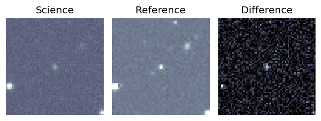
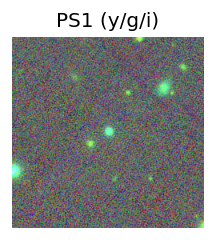
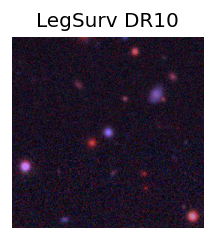
peak abs mag = -18.99 LegacySurvey: 1 sources in 3 arcsec Closest: d = 0.21 arcsec, 230.6 deg (east of north) photoz=0.14 (68% bounds 0.09, 0.19), type=REX peak abs mag = -19.32 (68% bounds -18.37, -20.01) 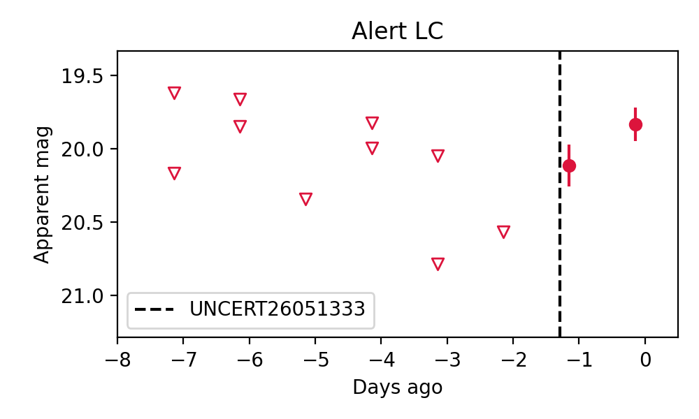
20. ZTF26aawqtkq (Afterglow?) [Back to Top] [Share] [Trigger Swift] [Fritz ] [Lasair ]RA, Dec: 271.42774, 1.72972 18h 5m42.66s, 1d43m47.01sGalactic (l, b): 29.2252, 10.95741 ext(g-r) = 0.295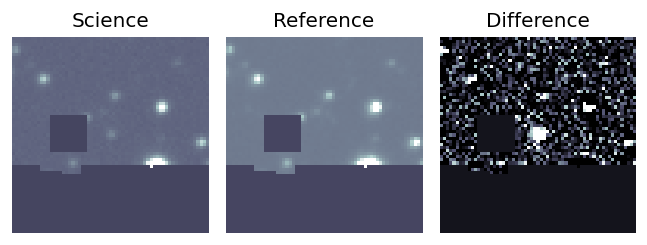
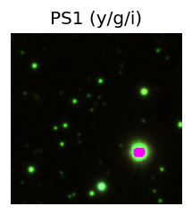
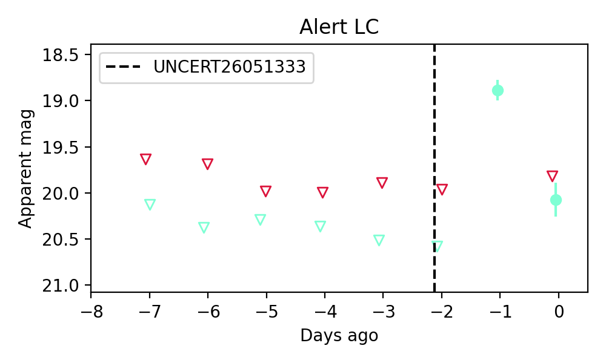
21. ZTF26aawsbxk (FBOT?) [Back to Top] [Share] [Trigger Swift] [Fritz ] [Lasair ]RA, Dec: 150.54898, 12.87745 10h 2m11.75s, 12d52m38.82sGalactic (l, b): 224.16884, 48.00672 WARNING: 0.79 deg from ecliptic plane ext(g-r) = 0.036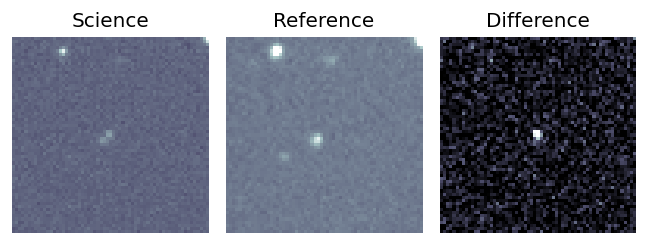
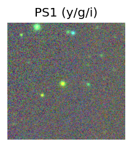
LegacySurvey: 1 sources in 3 arcsec Closest: d = 2.82 arcsec, 128.4 deg (east of north) photoz=0.13 (68% bounds 0.03, 0.35), type=PSF peak abs mag = -19.86 (68% bounds -16.74, -22.32) 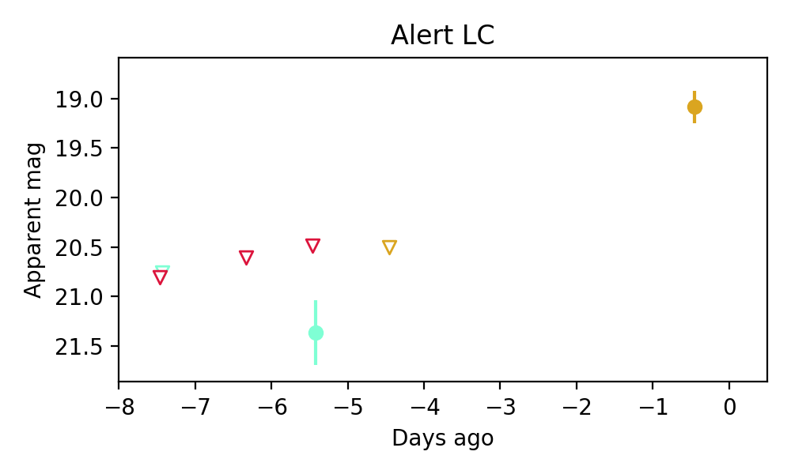
22. ZTF26aawskxx (Afterglow?) [Back to Top] [Share] [Trigger Swift] [Fritz ] [Lasair ]RA, Dec: 183.27947, 7.85556 12h13m7.07s, 7d51m20.01sGalactic (l, b): 275.94648, 68.69558 ext(g-r) = 0.018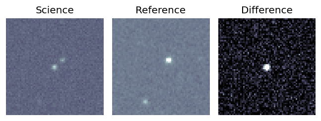
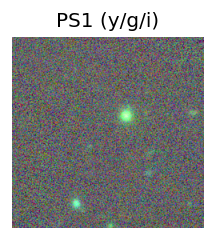
peak abs mag = -21.42 LegacySurvey: 1 sources in 3 arcsec Closest: d = 7.11 arcsec, 311.6 deg (east of north) photoz=0.14 (68% bounds 0.14, 0.15), type=SER peak abs mag = -21.02 (68% bounds -20.94, -21.11) 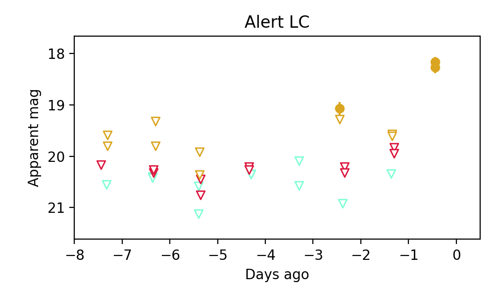
23. ZTF26aawtavp (Afterglow?) [Back to Top] [Share] [Trigger Swift] [Fritz ] [Lasair ]RA, Dec: 175.58548, 4.07325 11h42m20.52s, 4d 4m23.69sGalactic (l, b): 264.33697, 61.65303 WARNING: 1.98 deg from ecliptic plane ext(g-r) = 0.018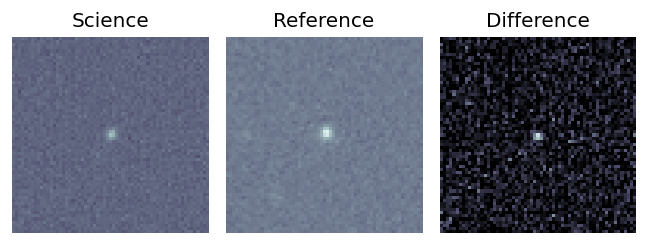
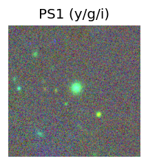
peak abs mag = -20.01 LegacySurvey: 1 sources in 3 arcsec Closest: d = 1.41 arcsec, 320.2 deg (east of north) photoz=0.18 (68% bounds 0.15, 0.19), type=SER peak abs mag = -19.91 (68% bounds -19.47, -20.13) 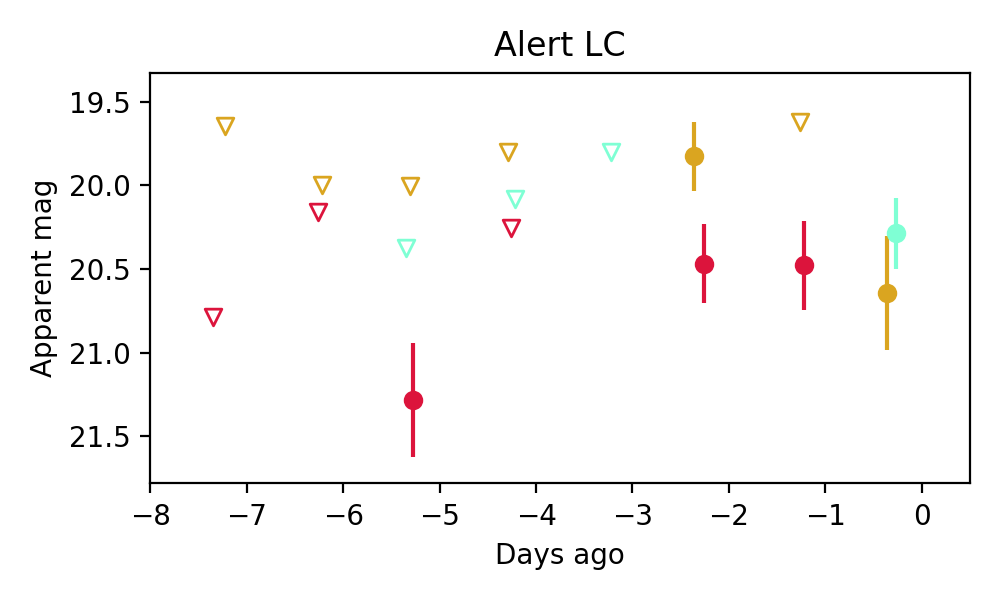
Consistent with synchrotron, g-r>0!
24. ZTF26aawtbkb (Afterglow?) [Back to Top] [Share] [Trigger Swift] [Fritz ] [Lasair ]RA, Dec: 185.84965, 12.94603 12h23m23.92s, 12d56m45.69sGalactic (l, b): 276.7293, 74.37349 ext(g-r) = 0.046peak abs mag = -17.82 LegacySurvey: 1 sources in 3 arcsec Closest: d = 5.07 arcsec, 64.7 deg (east of north) photoz=0.03 (68% bounds 0.03, 0.04), type=SER peak abs mag = -16.93 (68% bounds -16.5, -17.45) Consistent with synchrotron, g-r>0!
25. ZTF26aawtuwx (FBOT?) [Back to Top] [Share] [Trigger Swift] [Fritz ] [Lasair ]RA, Dec: 138.70062, 61.56004 9h14m48.15s, 61d33m36.15sGalactic (l, b): 153.4308, 40.47625 ext(g-r) = 0.038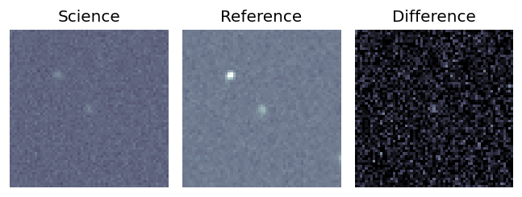
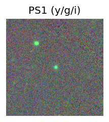
peak abs mag = -20.93 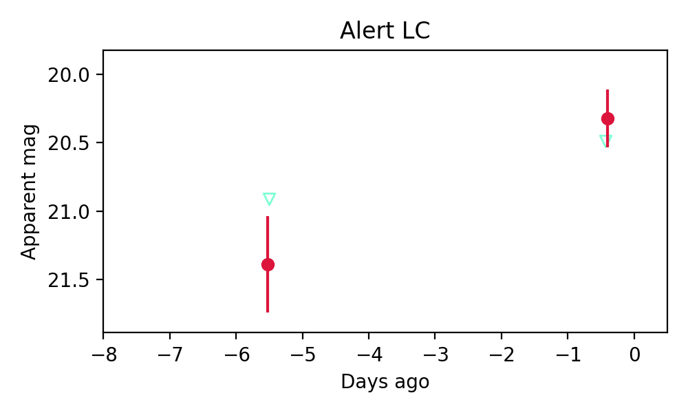
26. ZTF26aawvkdq (Afterglow?) [Back to Top] [Share] [Trigger Swift] [Fritz ] [Lasair ]RA, Dec: 248.33052, 8.11174 16h33m19.32s, 8d 6m42.25sGalactic (l, b): 23.85538, 34.31618 ext(g-r) = 0.077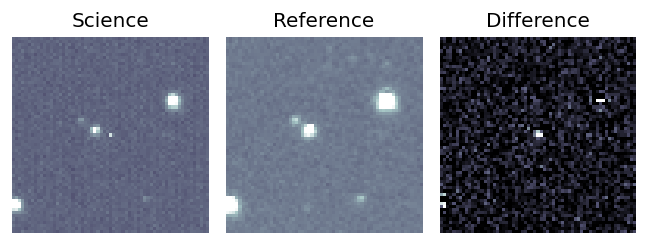
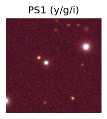
LegacySurvey: 1 sources in 3 arcsec Closest: d = 5.28 arcsec, 74.1 deg (east of north) photoz=0.03 (68% bounds 0.01, 0.1), type=PSF peak abs mag = -16.63 (68% bounds -14.39, -19.01) 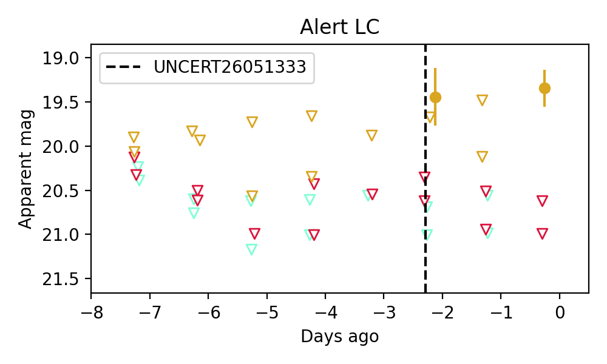
27. ZTF26aawvocc (Afterglow?) [Back to Top] [Share] [Trigger Swift] [Fritz ] [Lasair ]RA, Dec: 237.03009, -12.57417 15h48m7.22s, -12d-34m-27.02sGalactic (l, b): 355.90556, 31.58614 ext(g-r) = 0.237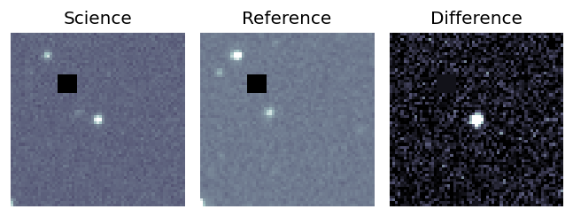
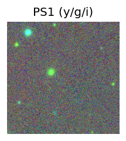
LegacySurvey: 1 sources in 3 arcsec Closest: d = 4.09 arcsec, 147.9 deg (east of north) photoz=0.89 (68% bounds 0.51, 1.49), type=REX peak abs mag = -26.36 (68% bounds -24.91, -27.75) 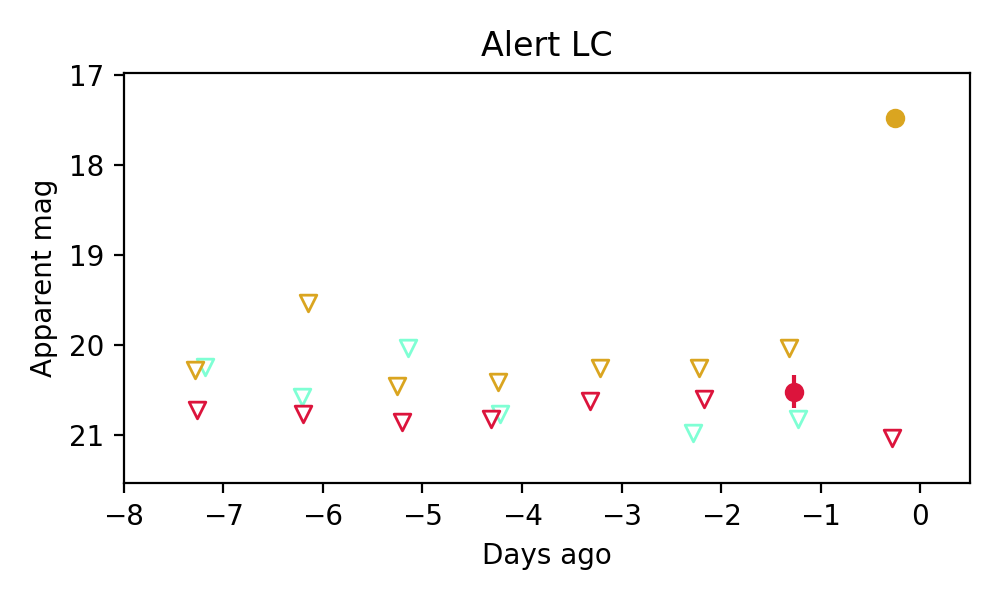
28. ZTF26aawvxly (Afterglow?) [Back to Top] [Share] [Trigger Swift] [Fritz ] [Lasair ]RA, Dec: 213.31452, 43.67039 14h13m15.48s, 43d40m13.41sGalactic (l, b): 83.32791, 66.63832 ext(g-r) = 0.008peak abs mag = -18.33 Consistent with synchrotron, g-r>0!
29. ZTF26aawwpml (Afterglow?) [Back to Top] [Share] [Trigger Swift] [Fritz ] [Lasair ]RA, Dec: 273.917, 10.2939 18h15m40.08s, 10d17m38.02sGalactic (l, b): 38.18139, 12.56803 ext(g-r) = 0.186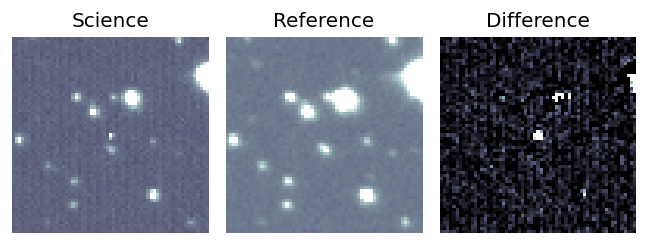
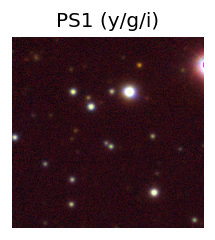
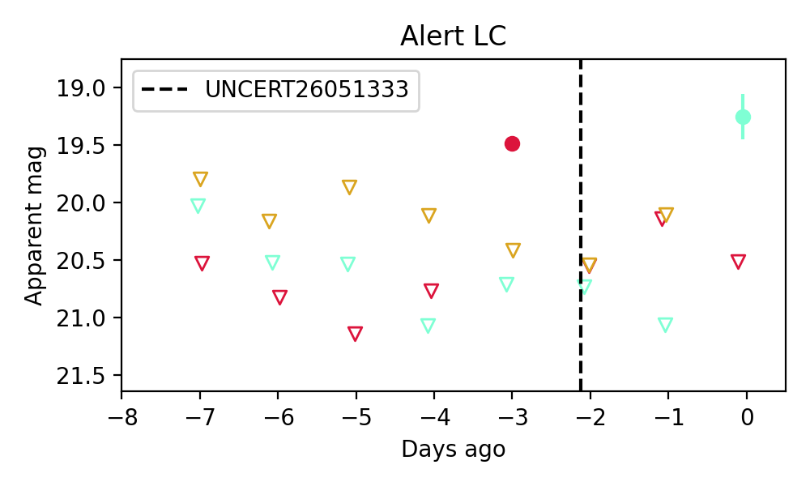
30. ZTF26aawwsor (Afterglow?) [Back to Top] [Share] [Trigger Swift] [Fritz ] [Lasair ]RA, Dec: 244.77605, -11.91725 16h19m6.25s, -11d-55m-2.10sGalactic (l, b): 2.13888, 26.29291 ext(g-r) = 0.334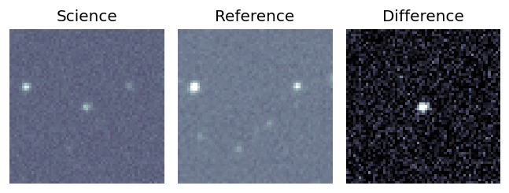
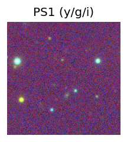
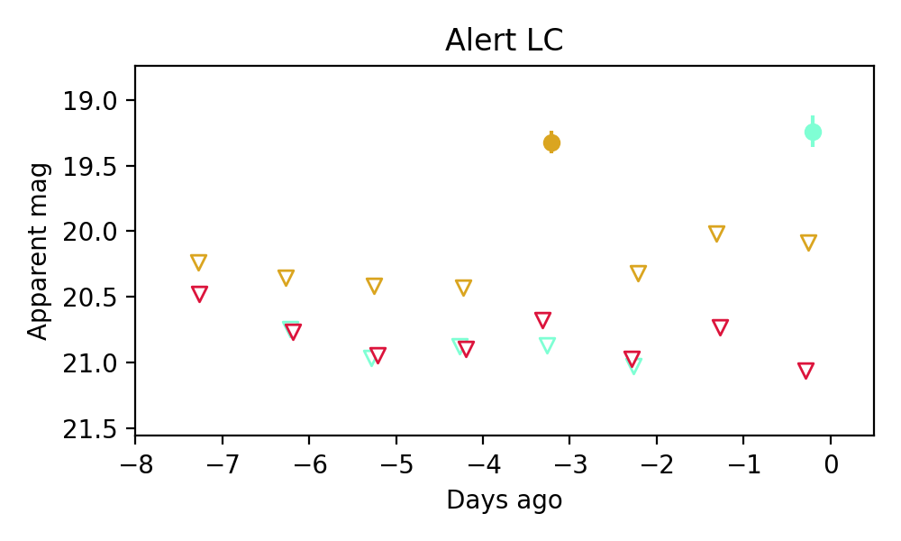